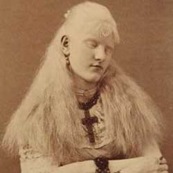

|
| Home|Talent|Cosmetic|Deformity|Abnormal|Ethnological |
AlbinosAlbinos were also frerquenly put in Freak Shows or Slide Shows as a representation of an oddity. Much like dwarves, we know today that this is a genetic disorder that cannot be undone, and should not be ridiculed for public enjoyment. Albinism also called achromia, achromasia, or achromatosis) is a congenital disorder characterized by the complete or partial absence of pigment in the skin, hair and eyes due to absence or defect of tyrosinase, a copper-containing enzyme involved in the production of melanin. It is the opposite of melanism. Albino women were especially common in Freak Shows, gaining attention for their long white hair and white complexion.
|